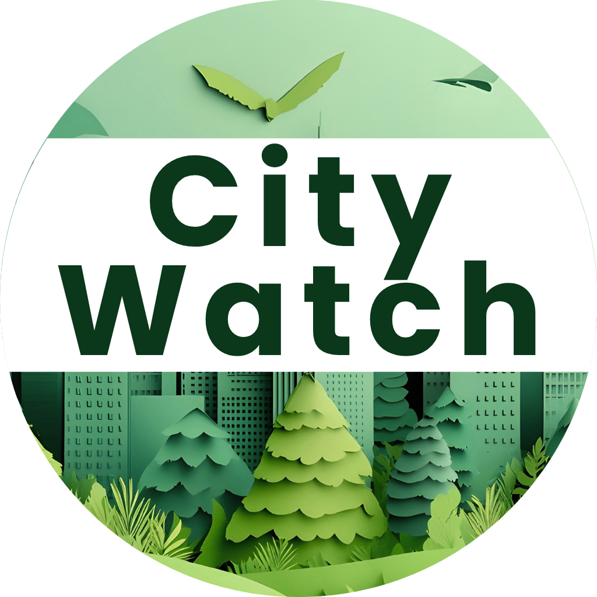
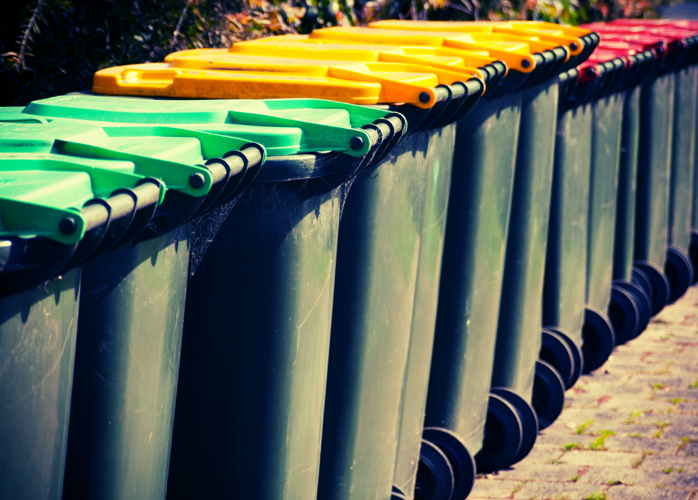

City Watch
Keep your city clean.
Report waste. Track issues.
Make your community better.

Report waste. Track issues.
Make your community better.
Report waste: Easily report waste-issues areas by location.
Track issues: See reports on the map in real time.
Clean city: Help improve your community
